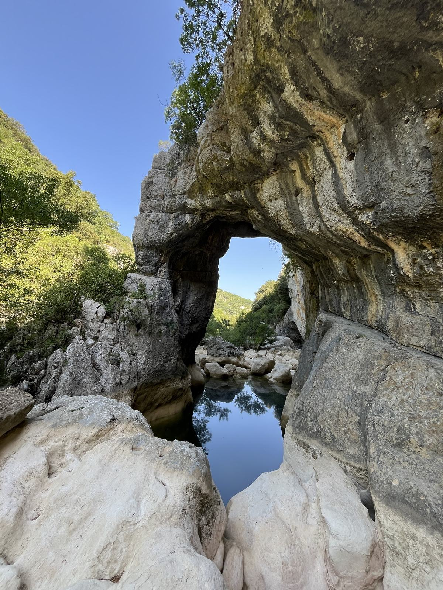
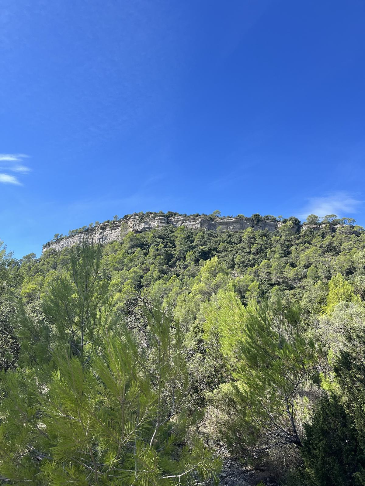
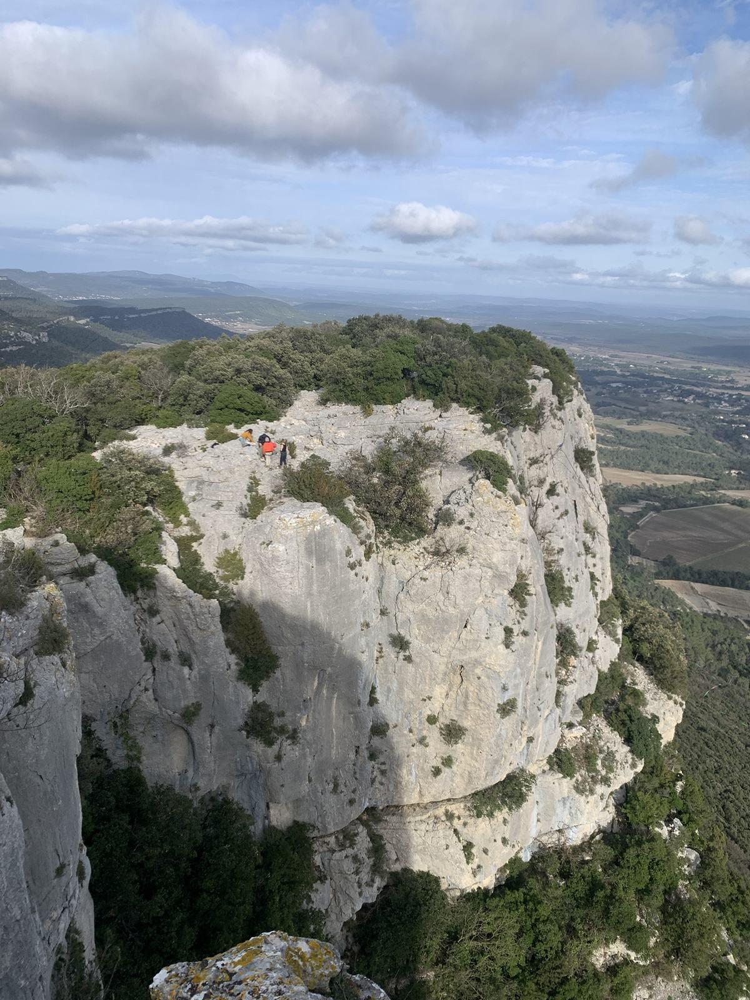
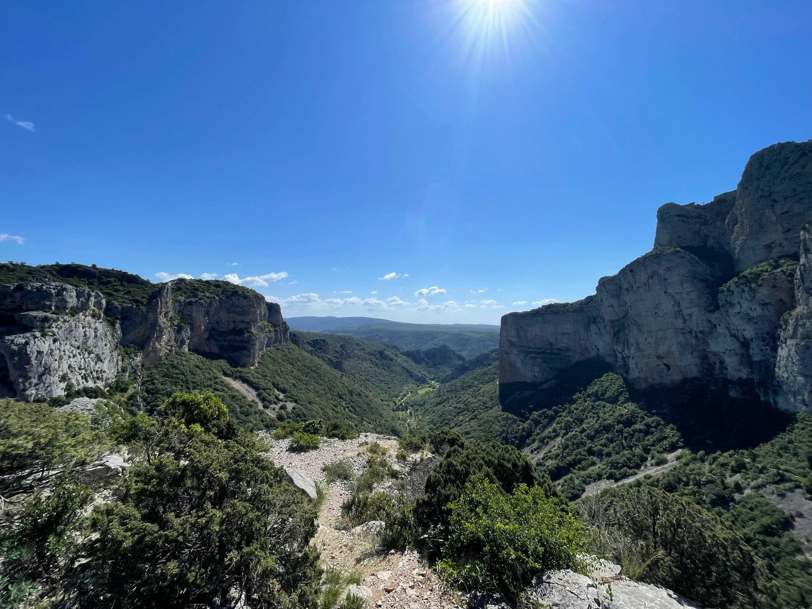
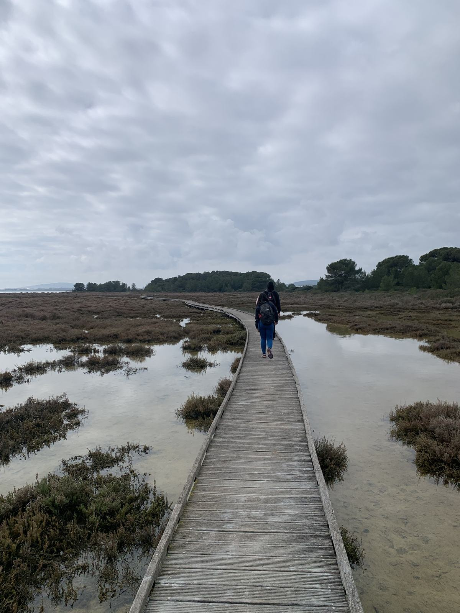
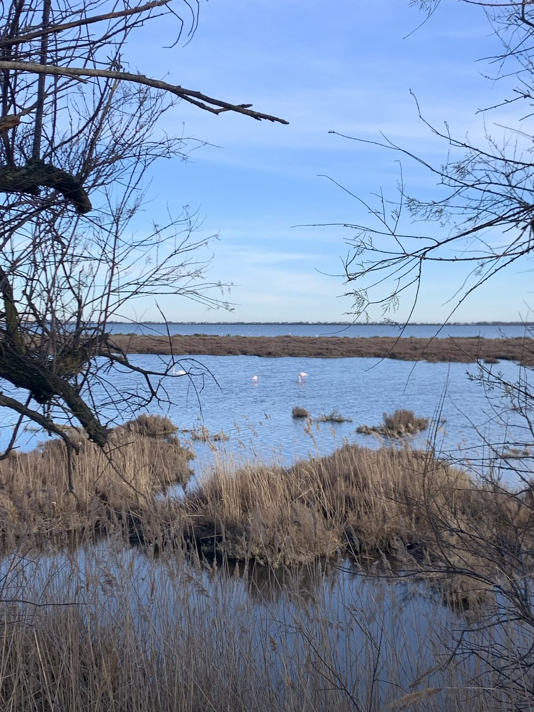

Itinéraires
Tous les itinéraires que j’ai explorés et que je vous propose de réaliser, en randonnée ou en trail. Pour chaque région, une carte pour repérer les parcours, puis une fiche par itinéraire avec la trace GPX à télécharger, le profil de dénivelé et mes conseils.
📍 Montpellier et ses alentours
Une série d’itinéraires à faire en rando ou en trail autour de Montpellier, parfaits pour la saison hivernale.
Cliquez sur une trace pour ouvrir la fiche de l’itinéraire.

Ravin des Arcs & gorges du Lamalou
Tour du Pic Saint-Loup
Tour du lac du Cécélès

Rando du rocher du Causse à Claret

Montagne de l’Hortus

Cirque de l’Infernet et mont Saint-Baudille
Cirque de Mourèze
Massif de la Gardiole

Sentier des Aresquiers

Balade autour de l’étang de Méjean (Lattes)
Forêt de Baillarguet (Clapiers)
D’autres itinéraires arrivent bientôt !
📍 Marseille et ses alentours
Calanques, criques et belvédères : mes randos autour de Marseille.
Cliquez sur une trace pour ouvrir la fiche de l’itinéraire.
📍 Pyrénées
Les randonnées à la journée que j’ai faites autour de Bagnères-de-Luchon.
Cliquez sur une trace pour ouvrir la fiche de l’itinéraire.


📍 Lozère
Mes balades et randonnées dans la région où j’ai grandi : causses, gorges, Aubrac, Margeride et mont Lozère.
Cliquez sur une trace pour ouvrir la fiche de l’itinéraire.